2002
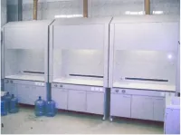
Рождение «СпецБалтМебель». Закупили первое оборудование, выпустили первые образцы.
Simple PRO сегодня — это ведущее российское предприятие по производству лабораторной мебели, основанное в 2002 году. Завод располагается в Санкт-Петербурге (п. Шушары), в новом собственном здании площадью 6 тысяч квадратных метров.
Наше производство оснащено современным высокотехнологичным оборудованием с ЧПУ для обработки металла, пластика, дерева и камня, что позволяет полностью контролировать технологический процесс и непосредственно влиять на конечный результат.
Александр Халимоненко
исполнительный директор
Мы трепетно относимся к качеству нашей продукции и исповедуем философию непрерывного совершенствования. Стремимся к тому, чтобы наши продукты и услуги были лучшими в отрасли.
Придаем особую важность выполнению взятых на себя обязательств перед клиентами, сотрудниками, партнерами, поставщиками. Основа бизнеса — это доверие, поэтому стараемся сделать все возможное (а иногда и невозможное), чтобы оправдать его.
Мы действуем исходя из долгосрочной перспективы, а не из краткосрочных финансовых результатов. Считаем, что репутация — дороже денег.
Выступаем за честные и прозрачные правила ведения бизнеса. Не участвуем в незаконных «схемах».
Двери нашего завода открыты для гостей. Мы всегда с интересом рассматриваем предложения по улучшению любых аспектов нашей деятельности, внедрению инноваций, обсуждению новых проектов. Сами готовы делиться опытом и знаниями.
Добро пожаловать!
2002

Рождение «СпецБалтМебель». Закупили первое оборудование, выпустили первые образцы.
2007
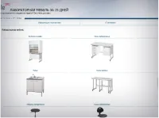
Мы отказались от всего, кроме лабораторной мебели. Запустили первый сайт.
2010
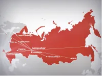
Сформировали дилерскую региональную сеть в России и странах СНГ.
2013
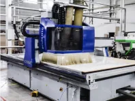
Закупили новое, современное оборудование с ЧПУ. Новый бренд — Simple PRO.
2015
Получили стандарт ISO 9001:2008, применительно к проектированию, разработке и производству лабораторной мебели.
2017
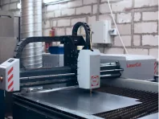
Закуплено новое оборудование для обработки листового металла.
2018
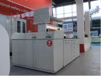
Обновленный модельный ряд продукции, продемонстрированный на выставке «Аналитика Экспо» в Москве.
2019
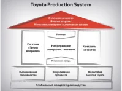
Новая система управления на основе принципов производственной системы Тойоты (TPS).
2020
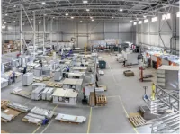
Новое производственное здание. Общая площадь 6000 м².
2022
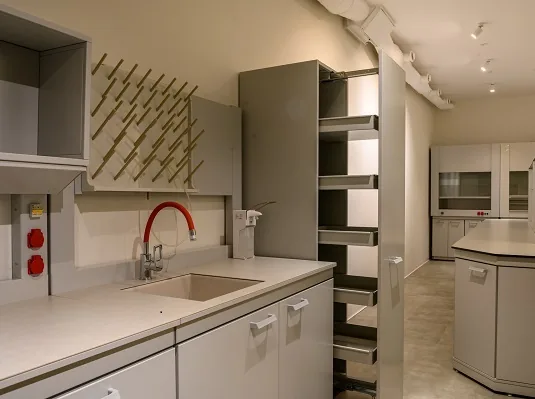
Обновление линейки лабораторной мебели.
2023
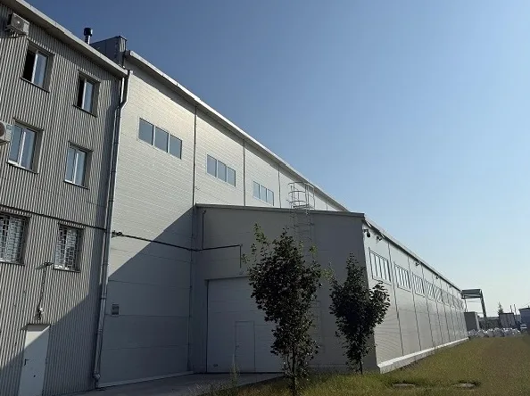
Расширение производственных площадей.
2024
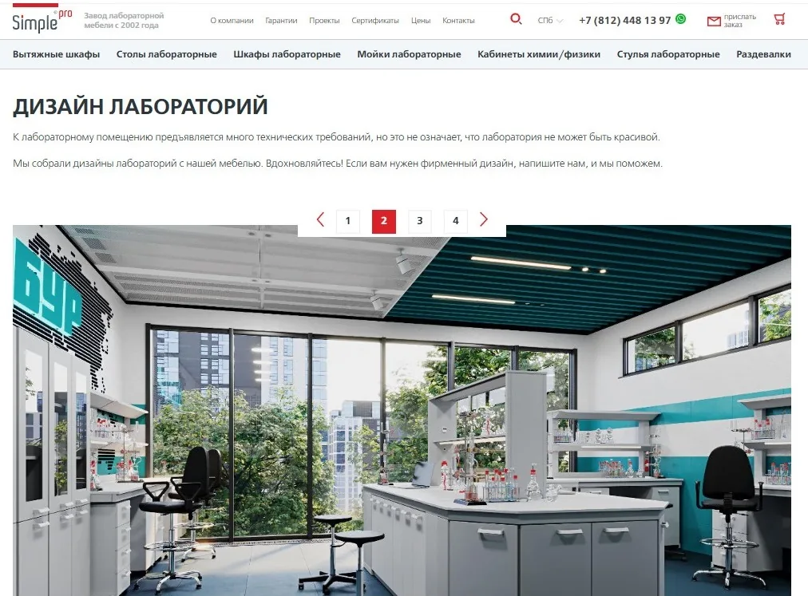
Обновление сайта.
2025
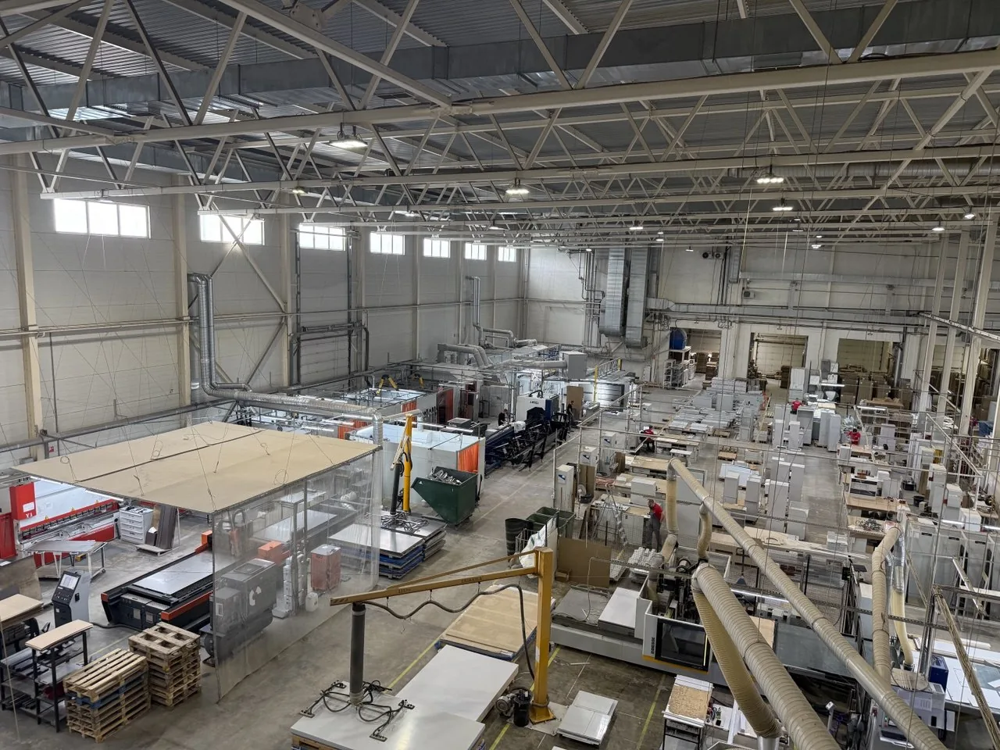
Обновление и расширение парка оборудования (внешняя аспирационная установка, обновление камнеобрабатывающего оборудования, новый лазерный труборез, внедрение лазерной сварки и модуля роботизированной сварки с поворотным столом).
Приезжайте к нам в гости! Поможем выбрать и дадим попробовать разные мебельные материалы.
Мы без проблем покажем вам наше новейшее ЧПУ оборудование, помогающее нам выпускать качественную продукцию точно в срок.
Наш завод находится по адресу:
Санкт-Петербург, пос. Шушары, Новгородский проспект, д. 25, кор. 3
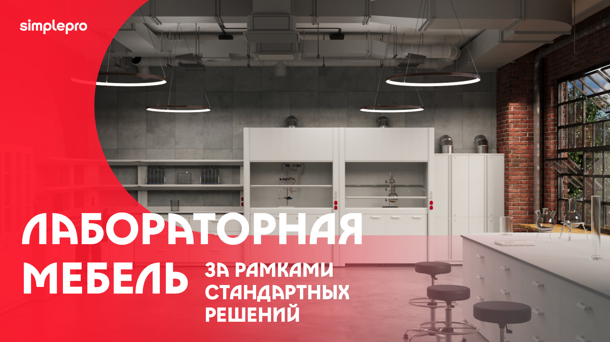
Современное оборудование и отлаженные процессы.
6000 м2
Пожалуй, это один из крупных заводов по производству лабораторной мебели в России.
15 дней
Срок изготовления
0,1 мм
Точность обработки деталей
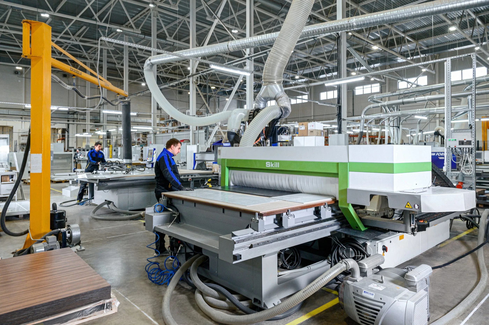
Мы знаем, как важно, чтобы в лаборатории было удобно, и все, что нужно — под рукой!
С другой стороны, расстановка зависит от подводов канализации, вентиляции и водоснабжения.
До покупки мы бесплатно спроектируем Вашу будущую лабораторию с учетом Ваших пожеланий.
Подготовим качественный 3D макет в разных ракурсах.
Наша задача — сделать удобную и качественную мебель на Вашем рабочем месте.
Оснащение лаборатории — это сложный процесс, в котором участвуют разные подрядчики. Все они должны сработать четко и вовремя.
Производство любых стандартных позиций из нашего каталога занимает 15 календарных дней.
За это время Ваша мебель будет изготовлена, упакована и подготовлена к отгрузке!